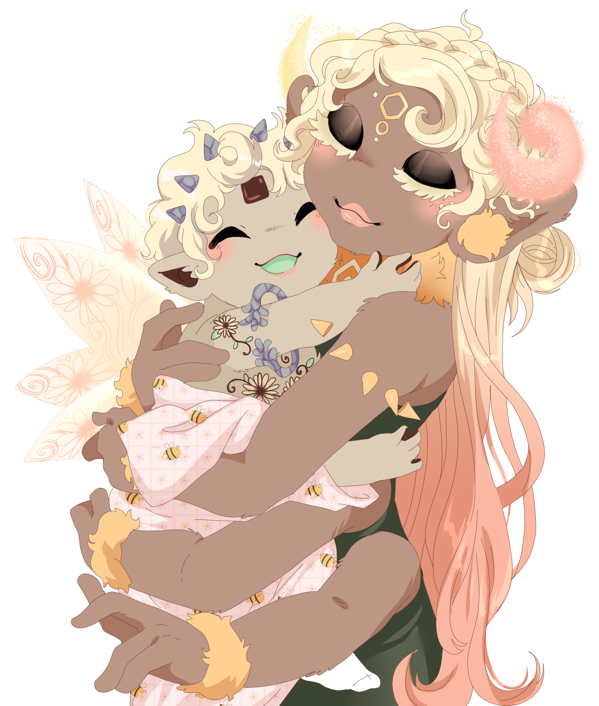
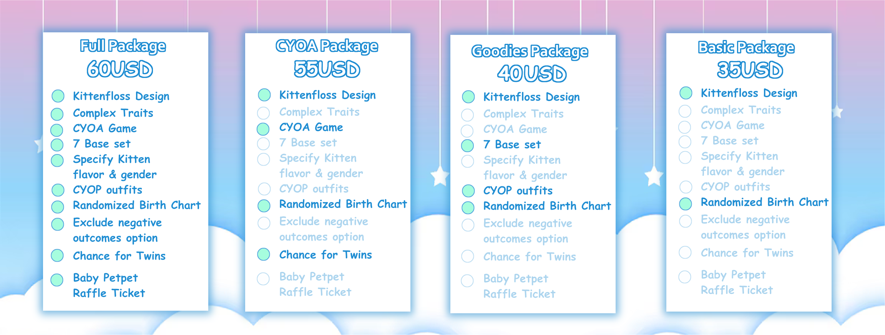
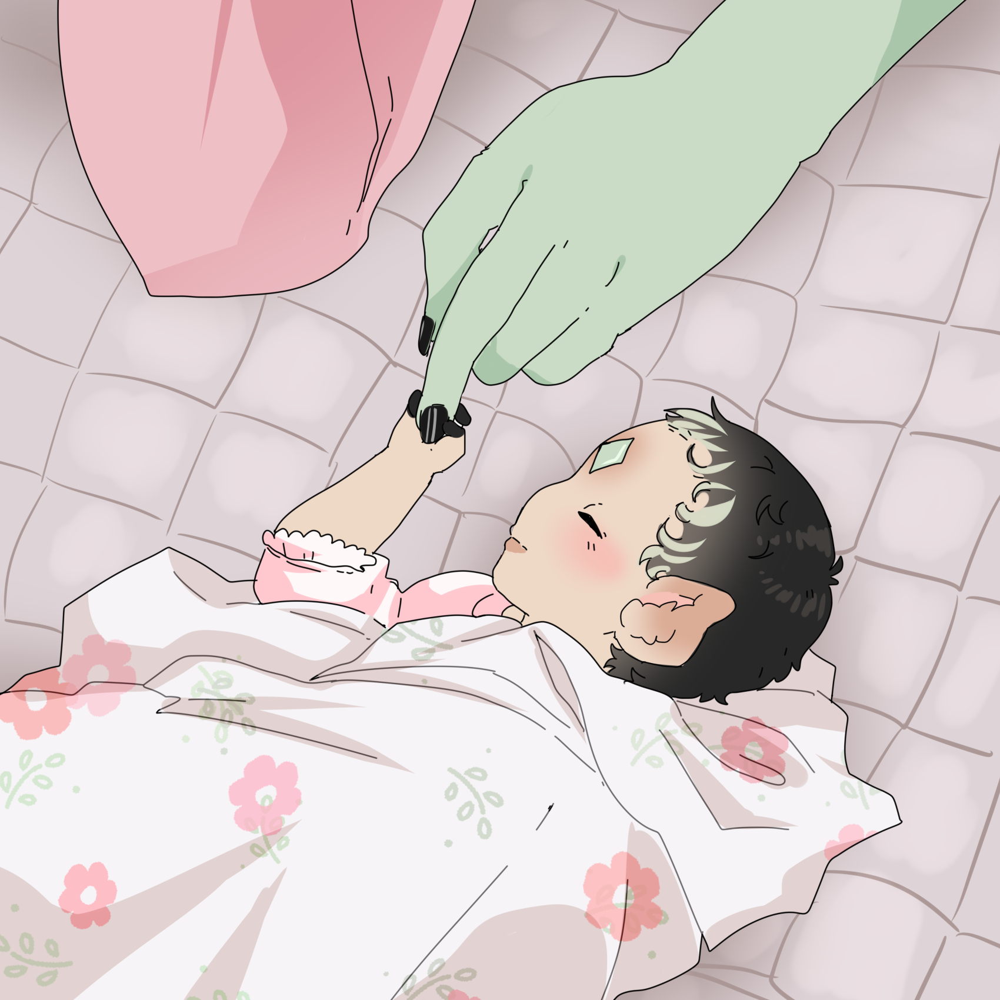

It's Kitten Season again on Caramella!
Floss families big and small are welcoming home new bundles of joy this season!Register to participate and receive a kittenfloss based on your parents' designs as well as a bundle of goodies and a CYOA mini rp in a discord server exploring your floss' pregnancy journey!
Join in the fun and register for KS 2026!
Register for Kitten Season 2026!
What's Kitten Season?
A kittenfloss is what we call an infant Candyfloss! Do you have a Candyfloss ship who is ready to take the next step and start a family? Now's your chance!How does it work?
The Kitten Season event is a pay-to-play event where you receive several items:A kittenfloss custom made by an admin to be born of your candyfloss couple, with a chance for twins
a set of brand new kittenfloss and family themed bases made by Tenshilove and Ink-palette,
a set of kittenfloss themed cyoa clothing lines to dress up your new little darling,
a raffle ticket to adopt one of fifteen specially drawn baby petpets for your kitten, and a playthrough of a customized CYOA adventure game!
You will spend a day or two in a specialized server with a DM to play the Kitten Season CYOA event where you will follow your floss on their journey to parenthood! With your DM you will be presented prompts with multiple choice options, which will immediately give you the next part of the story which matches your response. This session should only take a few hours to a day if you are slow to respond or if it gets interrupted. An admin will begin working on your kittenfloss custom as soon as registration closes and deliver them directly to you in the server along with some randomized information about your kitten's health data! This can include health complications, specific birthday, weight, power levels at birth and more!

Secrecy
Because of the nature of our format, you may experience the Choose your own Adventure story before other members. It is required that all members keep their stories a secret to prevent spoiling the story for those who are qeued up to play after you. When the month is over and all games have been completed you are free to post and share your stories and talk openly about them! However until you get the OK in the discord please refrain from spoiling the stories, or encouraging anyone to choose certain options in public forums. Thank you!Packages
Kitten Season has alot of stuff that comes with it so you can choose a larger or smaller package that better fits with your budget. Take a look at the options and choose the one that's right for you!1. Full Package 60USD
Includes the CYOA ( Choose your own Adventure) session that is DM'd by a staff member to give you a story customized by your choices! Now with 5 brand new scenerios for this year and a whole new ending! The routes to the next scenerio have been randomized to ensure a unique experience every time you play! Includes 7 YCH BASES which include parents, siblings, and kittens! Includes the Kittenfloss at the end of the event with the full 3+ add on traits and detailed overhaul coat! Allows you to specify the flavor and gender that you want for your kitten. Also includes a set of 3 brand new kitten character bases for you to use with your floss families! AND includes a cyop outfit set made just for kittenfloss to start your darling out with an adorable wardrobe! Includes a randomized birth chart with information about your kitten's health and gives the option to exclude any negative outcomes! Includes a chance of getting Twins! Includes a raffle ticket to win one of 15 one of a kind pre-made baby petpet adoptables by krissysempaiart!
2. CYOA Package 55USD
Includes the CYOA ( Choose your own Adventure) session that is DM'd by a staff member to give you a story customized by your choices! Now with 5 brand new scenerios for this year and a whole new ending! The routes to the next scenerio have been randomized to ensure a unique experience every time you play! Includes the Kittenfloss at the end of the event with a max of 3 add on traits and simple coat! Includes a chance of getting Twins! Includes a randomized birth chart with information about your kitten's health!
3. Goodies Package 40USD
Includes 7 YCH BASES which include parents, siblings, and kittens! Includes the Kittenfloss at the end of the event with the full 3+ add on traits and detailed overhaul coat! Allows you to specify the flavor and gender that you want for your kitten. AND includes a cyop outfit set made just for kittenfloss to start your darling out with an adorable wardrobe! Includes the Kittenfloss at the end of the event with a max of 3 add on traits and simple coat!! Includes a randomized birth chart with information about your kitten's health!
4. Basic Package 35 USD
No story or goodies but you still get a kitten! Includes the Kittenfloss with the minimum 1 add on trait and basic coat. Includes a randomized birth chart with information about your kitten's health!

Story Basics
Families come in all sorts of shapes and sizes, but sadly we have limited resources for the CYOA prompts. We can only prepare for so many variables and this year we were limited. Think of the CYOA story like a base. It is a basic outline of what may have happened to your floss during their pregnancy, which you can add to, change, and use as a branching off point for your real cannon story! Certain elements of the story are going to be assumed about your floss' lives and relationship just because its not possible to account for every variable. We put our efforts this year into making sure we have different options for pronouns and for family types with focus on hetero, gay, lesbian, single mom and single dad. Maybe in future years we will have time to prepare more, but this year you will have to fudge the stories a little to make it work with some floss. Thank you for understanding!
Variables
What if my floss is homosexual?We have options for homosexual couples to use donors and surrogates to allow them to have a child! Just fill out the right form for your couple!
Need a Donor?
We have some donors made just for this event that you can check out in the forums of the discord server!~
Also! Tons of people are willing to let you use their floss as a sperm donor or surrogate mother for your single or homosexual floss families! Just head over to the Discord to poke around the available donors/surrogates and to offer your own floss to be used! Remember even if they are listed on the discord you must ask permission from the owner before using their floss as a donor or surrogate mother!
What if my floss is single but wants a kitten?
That works too! We have a special story track just for single mothers and fathers who are not in a relationship but want to have a kitten!
What if my floss is in a polycule?
Sadly we were unable to set up a story track for more than 2 floss. We recommend signing up with just 2 of your polycule members and editing your resulting story to include the others afterwards.
What if my floss already has kids?
Sadly we were unable to set up a story track for parents who already have children. We recommend signing up with them anyway, and altering the resulting story to include their other children afterwards.